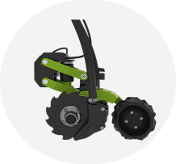
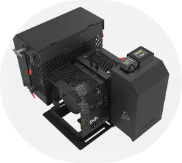

Productos
Row Cleaner

RowCleaner es un sistema barredor de todo tipo de rastrojos con montaje sobre el cuerpo de siembra. Controla de manera precisa la profundidad en la limpieza del surco para una emergencia del cultivo uniforme. También mejora el copiado del suelo, lo que permite mantener una siembra precisa a mayor velocidad. Además mejora la siembra con altos niveles de humedad.
Row Conditioner
RowConditoner es un sistema de tapado de surco que maximiza el contacto del suelo con la semilla, generando un entorno favorable para una germinación exitosa. Permite aprovechar la humedad del suelo por capilaridad.
CanFlow
El sensor de flujo CANFlow permite una medición precisa gracias al uso de tecnología de radar, logrando detección de alta definición en sembradoras AirDrill, u otras máquinas de aplicación de sólidos. La información es luego convertida a métricas de monitoreo de aplicación, describiendo en números concretos la distribución de producto sobre el área trabajada.
ActiveNozzle

El sistema ActiveNozzle permite lograr el volumen y presión deseados sin importar las condiciones de operación. Posee corte automático por picos, controla independientemente el volumen y la presión para lograr un tamaño de gota constante.
AirLink
AirLink es un módulo accesorio al generador eléctrico eGEN que establece un puente inalámbrico para la comunicación de la sembradora con el tractor.
ActiveForce
ActiveForce es un complemento de ecuRow que le permite medir el exceso de carga vertical en las ruedas calibradoras y ajustarlo continuamente, con precisión, surco por surco.
ActiveSingulation
ActiveForce es un complemento de ecuRow que le permite medir el exceso de carga vertical en las ruedas calibradoras y ajustarlo continuamente, con precisión, surco por surco.
ActiveForce
ActiveForce es un complemento de ecuRow que le permite medir el exceso de carga vertical en las ruedas calibradoras y ajustarlo continuamente, con precisión, surco por surco.
ActiveForce
ActiveForce es un complemento de ecuRow que le permite medir el exceso de carga vertical en las ruedas calibradoras y ajustarlo continuamente, con precisión, surco por surco.